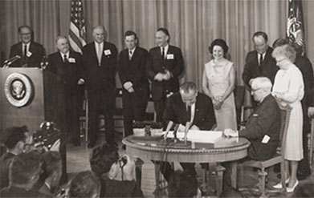
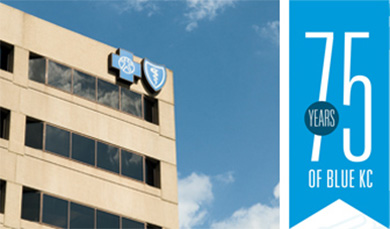

That Was Then. This is Now.
The first group hospitalization plan, known as Group Hospital Services, began operating in Kansas City and was later named Blue Cross of Kansas City. Blue Cross of Kansas City was incorporated with initial funding from the Jackson County Medical Society and local hospitals. Starting with just seven network hospitals, two employees and $3,025 in working capital provided by local physicians, hospitals and individuals, Blue Cross of Kansas City grew to 10 network hospitals and eight employees in just one year.
Our first group? Wolferman's Bakery. Our first group employee? Betty Jackson, Office Manager and Controller at Wolferman's.
Kansas City BlueShield was formed to provide members with a prepayment plan for physician services, holding contracts with more than 300 companies and serving more than 14,000 members within a year of inception.
Non-group enrollment was introduced, offering memberships without age limit to all who do not have group enrollment available. Kansas City was the first Plan in the county to offer this type of enrollment without age limit, thus making membership available to everyone in the community.
With the growing need to provide healthcare to senior citizens, we introduced a Medicare program that provided seniors with health insurance—and still do today.
The Kansas City BlueCross and BlueShield plans merged to become one entity, creating Blue Cross and Blue Shield of Kansas City (Blue KC). Since then, our company has continued to add members from the greater Kansas City area. With health and wellness becoming a prime focus, Blue KC developed A Healthier You™, a comprehensive program that gives members the personalized tools, services and products they need to achieve lifelong health and wellness.
In 2003, Blue Cross and Blue KC marked its 65th anniversary by purchasing a new headquarters and by growing revenues and membership to record levels. We purchased our headquarters building at 2301 Main Street to help drive down administrative costs and demonstrate our long-standing commitment to Kansas City. This same year, Blue KC celebrated its 65th anniversary and grew our revenues to more than $1 billion and saw the strongest overall membership growth in our history.
As a market leader, we continue to embrace new ideas to make healthcare more affordable and to improve the customer experience. We've developed new products designed to give groups and individuals more affordable choices. We've entered the Medicare Advantage market, giving Kansas City Baby Boomers the chance to keep their Blue KC coverage when they become Medicare eligible. In our Live Blue Stores, members can meet face-to-face with a health insurance expert to make better decisions. We continue to embrace innovations like telemedicine and health apps so our members get the high-tech, high-touch care they deserve. And looking to the future, our Blue Ribbon Advisory Panel is busy planning the region’s next generation of patient-centered healthcare.

